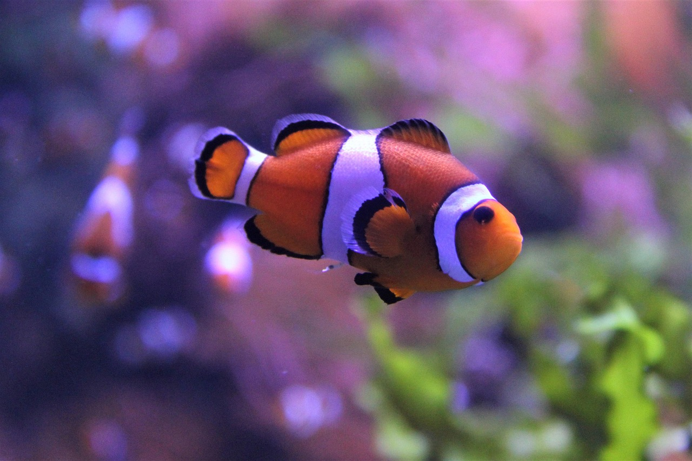
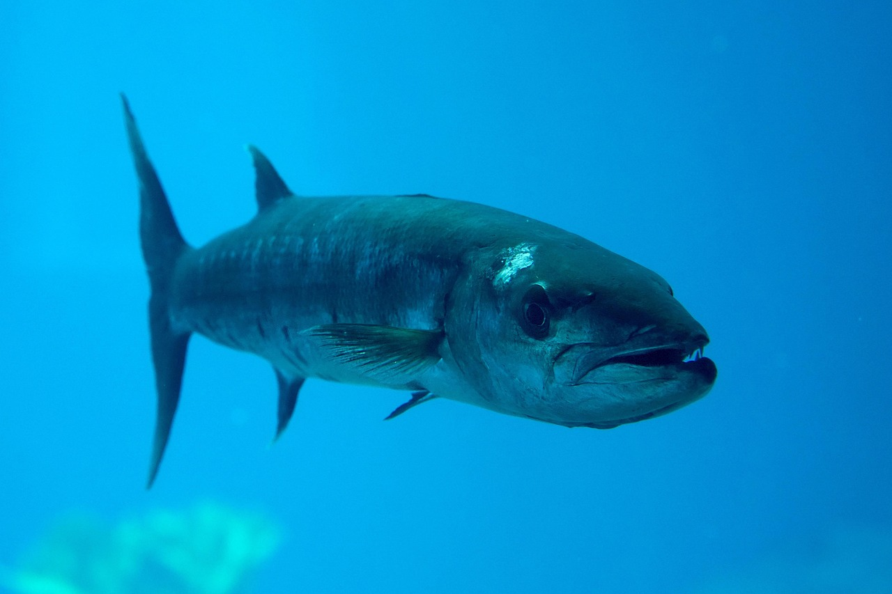

Marine Life: Fish

Clownfish
The Clownfish is a small, brightly colored marine fish known for its bold orange body with white stripes bordered by black. Belonging to the genus Amphiprion, clownfish are native to the warm shallow waters of the Pacific and Indian Oceans, including the Great Barrier Reef and the Red Sea Clownfish are famous for their symbiotic relationship with sea anemones, where they find protection among the stinging tentacles that would harm most other fish
Fish
Blue Tang
The Blue Tang is a vibrant, tropical fish best known for its striking royal blue body and bright yellow tail. It has an oval, laterally compressed body and is a member of the surgeonfish family (Acanthuridae), scientifically named Paracanthurus hepatus. Native to the warm waters of the Indo-Pacific, the Blue Tang is commonly found in coral reefs where it grazes on algae. It plays an important role in reef health by preventing algae overgrowth..
Fish
Barracuda
The barracuda is a large, predatory fish known for its long, slender body, powerful jaws, and sharp, fang-like teeth. Found in tropical and subtropical oceans worldwide, it has a silver-colored body with a bluish or greenish back, helping it blend into open waters. Barracudas are swift and aggressive hunters, capable of sudden bursts of speed to ambush prey such as smaller fish and squid. They are often seen alone, though young barracudas may form schools. While they rarely attack humans, their appearance and speed make them formidable creatures of the sea..
Fish